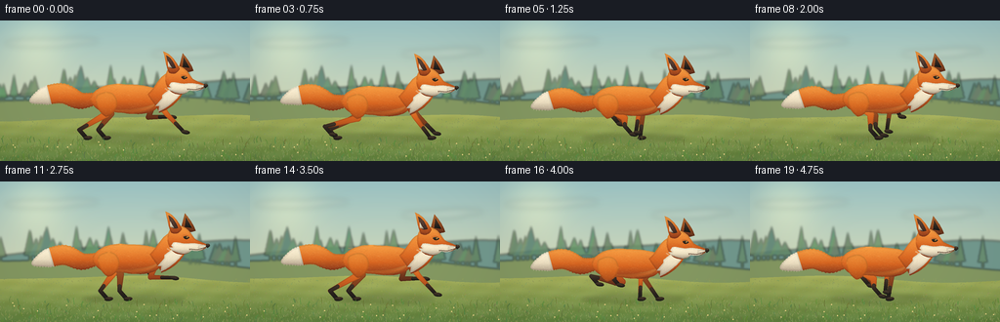
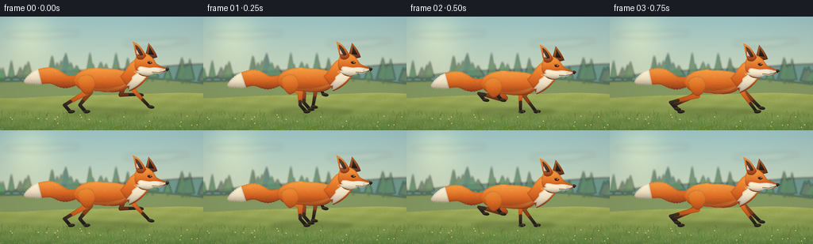

CODING AGENTS AS PIXEL WORLD MODELS
traex/GPT-6.1-Sol · instance_preservation_0014
点击播放 · 原生 RGB 像素
逐轮保存的候选
回放视频、检查图与代码变化。
每份候选均可单独播放。实际图片检查记录在下方工具轨迹中。
候选 01播放与检查图
点击播放 · 原生 RGB 像素


展开代码变化
--- 上一保存版本
+++ 本次保存版本
@@ -0,0 +1,346 @@
+"""Deterministic, supersampled procedural RGB animation; no external assets."""
+from pathlib import Path
+import json, math
+import numpy as np
+from PIL import Image, ImageDraw, ImageFilter
+from scipy.ndimage import distance_transform_edt
+import artifact_io
+
+ROOT = Path(__file__).resolve().parent
+SPEC = json.loads((ROOT / 'task_spec.json').read_text())
+W,H = SPEC['width'],SPEC['height']
+S = 4
+SW,SH = W*S,H*S
+rng = np.random.default_rng(1604)
+
+# Curves are sampled in scene coordinates, then rasterized at fourfold resolution.
+def bezier(p, n=20):
+ p=np.array(p,float)
+ t=np.linspace(0,1,n)[:,None]
+ return ((1-t)**3*p[0]+3*(1-t)**2*t*p[1]+3*(1-t)*t*t*p[2]+t**3*p[3]).tolist()
+
+def path(start, pieces):
+ out=[start]
+ for piece in pieces:
+ if len(piece)==2 and isinstance(piece[0],(int,float)):
+ out.append(piece)
+ else:
+ out.extend(bezier([out[-1],*piece])[1:])
+ return out
+
+def mask_poly(points):
+ m=Image.new('L',(SW,SH))
+ ImageDraw.Draw(m).polygon([(round(x*S),round(y*S)) for x,y in points],fill=255)
+ return m
+
+def ellipse_points(cx,cy,rx,ry,angle=0):
+ t=np.linspace(0,2*np.pi,90)
+ return [(cx+rx*np.cos(v)*np.cos(angle)-ry*np.sin(v)*np.sin(angle),cy+rx*np.cos(v)*np.sin(angle)+ry*np.sin(v)*np.cos(angle)) for v in t]
+
+ORANGE=((246,159,68),(213,100,33),(139,59,30))
+DARK_ORANGE=((182,107,52),(141,70,32),(91,44,27))
+CREAM=((255,246,220),(235,222,193),(182,165,141))
+BLACK=((70,56,43),(44,36,31),(25,27,25))
+
+# Fixed fur marks, reused for all frames. Fur is fine enough to integrate after downsampling.
+fur_x=rng.uniform(17,216,5000)
+fur_y=rng.uniform(27,128,5000)
+fur_len=rng.uniform(.45,1.55,5000)
+fur_light=rng.random(5000)
+
+def painted(im, points, colors=ORANGE, texture=True, direction=0.14, edge=True):
+ m=mask_poly(points)
+ bb=m.getbbox()
+ if bb is None: return
+ x0,y0,x1,y1=bb
+ mm=np.asarray(m.crop(bb)).astype(float)/255
+ hh,ww=mm.shape
+ yy,xx=np.mgrid[0:hh,0:ww]
+ t=yy/max(1,hh-1)
+ top,mid,bottom=[np.array(v,float) for v in colors]
+ a=np.minimum(t/.58,1)[...,None]
+ b=np.maximum((t-.58)/.42,0)[...,None]
+ c=top[None,None,:]*(1-a)+mid[None,None,:]*a
+ c=c*(1-b)+bottom[None,None,:]*b
+ dist=distance_transform_edt(mm>0)
+ roundness=np.clip(dist/(S*2.1),0,1)
+ c=c*(.86+.14*roundness[...,None])
+ # Soft broad light along the upper flank.
+ glow=np.exp(-((xx/max(1,ww)-.37)**2/.25+(t-.32)**2/.085))
+ c+=glow[...,None]*np.array([8,6,3])
+ # Stationary fine pigment, not frame-wise flicker.
+ noise=np.sin((xx+x0)*.46+(yy+y0)*1.14)*np.cos((yy+y0)*.63)*1.05
+ c+=noise[...,None]
+ patch=Image.fromarray(np.uint8(np.clip(c,0,255)))
+ if texture:
+ ink=Image.new('RGBA',(ww,hh))
+ d=ImageDraw.Draw(ink)
+ sel=(fur_x*S>=x0)&(fur_x*S<x1)&(fur_y*S>=y0)&(fur_y*S<y1)
+ for x,y,l,light in zip(fur_x[sel],fur_y[sel],fur_len[sel],fur_light[sel]):
+ px,py=x*S-x0,y*S-y0
+ tint=(255,219,145,40) if light>.46 else (85,36,16,26)
+ if colors==CREAM:
+ tint=(255,255,239,49) if light>.4 else (133,119,99,25)
+ if colors==BLACK:
+ tint=(136,111,80,30) if light>.55 else (10,15,13,15)
+ d.line((px,py,px+l*S*math.cos(direction),py+l*S*math.sin(direction)),fill=tint,width=1)
+ patch=Image.alpha_composite(patch.convert('RGBA'),ink).convert('RGB')
+ im.paste(patch,(x0,y0),m.crop(bb))
+ return m
+
+def line(im,pts,color,width=1):
+ ImageDraw.Draw(im).line([(int(x*S),int(y*S)) for x,y in pts],fill=color,width=max(1,round(width*S)),joint='curve')
+
+def segment_mask(points,widths):
+ m=Image.new('L',(SW,SH));d=ImageDraw.Draw(m)
+ for a,b,wa,wb in zip(points[:-1],points[1:],widths[:-1],widths[1:]):
+ a=np.array(a);b=np.array(b);v=b-a;v=v/(np.linalg.norm(v)+1e-6)
+ n=np.array([-v[1],v[0]])
+ q=[a+n*wa/2,b+n*wb/2,b-n*wb/2,a-n*wa/2]
+ d.polygon([(int(x*S),int(y*S)) for x,y in q],fill=255)
+ for (x,y),w in zip(points,widths):
+ r=w/2;d.ellipse(((x-r)*S,(y-r)*S,(x+r)*S,(y+r)*S),fill=255)
+ return m
+
+def paint_mask(im,m,colors):
+ # Reuse the same lighting treatment on tapered limb silhouettes.
+ bb=m.getbbox()
+ if bb is None:return
+ x0,y0,x1,y1=bb; a=np.asarray(m.crop(bb))/255.; hh,ww=a.shape
+ yy,xx=np.mgrid[0:hh,0:ww];t=yy/max(hh-1,1)
+ c0,c1,c2=[np.array(v,float) for v in colors]
+ p=np.clip(t/.5,0,1)[...,None];q=np.clip((t-.5)/.5,0,1)[...,None]
+ c=(c0*(1-p)+c1*p)*(1-q)+c2*q
+ dist=distance_transform_edt(a>0)
+ c*= (.81+.19*np.clip(dist/(1.25*S),0,1))[...,None]
+ c+=np.sin(xx*.54+yy*.83)[...,None]*1.0
+ im.paste(Image.fromarray(np.uint8(np.clip(c,0,255))),(x0,y0),m.crop(bb))
+
+# Paint wide, coherent scenery, with depth-specific tracking-camera motion.
+WORLD=900
+sky_y=np.linspace(0,1,SH)[:,None,None]
+sky=np.tile(np.array([157,197,198])[None,None,:]*(1-sky_y)+np.array([244,230,177])[None,None,:]*sky_y,(1,SW,1))
+yy,xx=np.mgrid[0:SH,0:SW]
+sun=np.exp(-((xx/S-37)**2+(yy/S-23)**2)/(2*23**2))
+sky+=sun[...,None]*np.array([35,25,9]);SKY=Image.fromarray(np.uint8(np.clip(sky,0,255)))
+
+# Long soft cloud wisps, with no distracting graphic edges.
+cloud=Image.new('RGBA',(SW,SH));dc=ImageDraw.Draw(cloud)
+for cx,cy,rx,ry in [(41,23,37,4),(78,21,23,3),(188,34,33,4),(214,31,25,3)]:
+ dc.ellipse(((cx-rx)*S,(cy-ry)*S,(cx+rx)*S,(cy+ry)*S),fill=(255,252,225,37))
+SKY=Image.alpha_composite(SKY.convert('RGBA'),cloud.filter(ImageFilter.GaussianBlur(3*S))).convert('RGB')
+
+def hills(base,amp,period,colour,seed):
+ lay=Image.new('RGBA',(WORLD*S,SH));d=ImageDraw.Draw(lay)
+ xs=np.linspace(0,WORLD,1000)
+ ys=base+amp*np.sin(xs/period+seed)+amp*.38*np.sin(xs/(period*.51)+seed*1.8)
+ p=list(zip(xs*S,ys*S))+[(WORLD*S,SH),(0,SH)]
+ d.polygon(p,fill=colour)
+ return lay
+
+FAR=hills(69,8,70,(115,154,143,255),1.2)
+FAR=FAR.filter(ImageFilter.GaussianBlur(1.25*S))
+MID=hills(84,6,83,(133,153,98,255),3)
+d=ImageDraw.Draw(MID)
+r=np.random.default_rng(332)
+# A loose, atmospheric tree line; a clear opening behind the fox.
+for x in np.sort(r.uniform(0,WORLD,135)):
+ ground=82+5*np.sin(x/83+3)
+ height=r.uniform(13,32);wide=r.uniform(5,10)
+ c=(int(r.integers(86,116)),int(r.integers(126,150)),int(r.integers(91,116)),210)
+ d.line((x*S,(ground-height*.5)*S,x*S,(ground+3)*S),fill=(93,113,76,210),width=2*S)
+ for k in range(4):
+ top=ground-height+height*k*.16
+ width=wide*(.35+k*.19)
+ p=[((x-width)*S,(top+height*.43)*S),(x*S,top*S),((x+width)*S,(top+height*.43)*S)]
+ d.polygon(p,fill=c)
+MID=MID.filter(ImageFilter.GaussianBlur(1.05*S))
+MEADOW=hills(100,3,56,(158,170,88,255),.8)
+a=np.asarray(MEADOW).copy();y=np.arange(SH)[:,None]/S
+blend=np.clip((y-96)/48,0,1)[...,None]
+bgc=np.array([170,179,93])*(1-blend)+np.array([96,129,63])*blend
+bgc=np.broadcast_to(bgc,(SH,WORLD*S,3)).copy()
+xx2=np.arange(WORLD*S)[None,:]/S
+variation=(np.sin(xx2*.15+y*.3)+np.sin(xx2*.036-y*.6))*2.6
+bgc+=variation[...,None]
+a[:,:,:3]=np.uint8(np.clip(bgc,0,255));MEADOW=Image.fromarray(a)
+d=ImageDraw.Draw(MEADOW)
+r=np.random.default_rng(55)
+for _ in range(6500):
+ x=r.uniform(0,WORLD); y=r.uniform(100,146)
+ h=r.uniform(.35,2.5)*(y-82)/55
+ color=(int(r.integers(120,193)),int(r.integers(144,187)),int(r.integers(60,108)),int(r.integers(60,150)))
+ d.line((x*S,y*S,(x+r.uniform(-1,1))*S,(y-h)*S),fill=color,width=r.choice([1,2]))
+# The foreground's occasional wildflowers and taller grass provide legible parallax.
+GRASS=Image.new('RGBA',(WORLD*S,SH));d=ImageDraw.Draw(GRASS)
+for _ in range(750):
+ x=r.uniform(0,WORLD);y=r.uniform(124,150);ht=r.uniform(2,7)
+ col=(int(r.integers(73,116)),int(r.integers(112,148)),int(r.integers(46,77)),210)
+ d.line([(x*S,y*S),((x-.4)*S,(y-ht*.55)*S),((x+r.uniform(-2,2))*S,(y-ht)*S)],fill=col,width=r.choice([2,3]))
+for _ in range(80):
+ x=r.uniform(0,WORLD); y=r.uniform(129,146);ht=r.uniform(3,7)
+ d.line((x*S,y*S,x*S,(y-ht)*S),fill=(97,130,63,220),width=2)
+ rr=.6*S
+ d.ellipse((x*S-rr,(y-ht)*S-rr,x*S+rr,(y-ht)*S+rr),fill=(246,218,140,230))
+
+
+def crop_layer(lay,offset):
+ x=int(offset*S)
+ return lay.crop((x,0,x+SW,SH))
+
+def ik(root,foot,l1,l2,bend=1):
+ root=np.array(root,float);foot=np.array(foot,float)
+ v=foot-root;dd=np.linalg.norm(v);dd=max(.01,min(dd,l1+l2-.1))
+ angle=math.atan2(v[1],v[0]);ca=np.clip((l1*l1+dd*dd-l2*l2)/(2*l1*dd),-1,1)
+ a=angle+bend*math.acos(ca)
+ return root+np.array([math.cos(a),math.sin(a)])*l1
+
+
+def render_fox(im,t):
+ phase=2*math.pi*1.14*t+.25
+ bob=-2.6*math.sin(phase+.4)
+ dx=2.2*math.sin(t*.62)
+ def tr(p):return (p[0]+dx,p[1]+bob)
+ def pts(pp):return [tr(p) for p in pp]
+ # A moving, feather-edged contact shadow; darkest directly beneath the body.
+ shadow=Image.new('RGBA',im.size);ds=ImageDraw.Draw(shadow)
+ ds.ellipse(((82+dx)*S,116*S,(188+dx)*S,125*S),fill=(46,54,27,52))
+ ds.ellipse(((103+dx)*S,119*S,(169+dx)*S,123*S),fill=(39,48,27,34))
+ shadow=shadow.filter(ImageFilter.GaussianBlur(2*S))
+ im.paste(Image.alpha_composite(im.convert('RGBA'),shadow).convert('RGB'))
+
+ def leg(kind,far):
+ ph=phase+(0.85 if far else 0)+(math.pi+.45 if kind=='rear' else 0)
+ root=tr((107,85) if kind=='rear' else (159,82))
+ foot_x=(108 if kind=='rear' else 163)+26*math.cos(ph)+dx
+ lift=(16 if kind=='rear' else 24)*max(0,math.sin(ph))
+ foot=(foot_x,120-lift)
+ if kind=='rear':
+ knee=tr((117+9*math.cos(ph-.35),99+2*math.sin(ph)))
+ hock=(foot[0]-7,foot[1]-8)
+ joints=[root,knee,hock,foot]
+ widths=[12 if not far else 9,7,3.9,4]
+ black_start=(knee[0]*.28+hock[0]*.72,knee[1]*.28+hock[1]*.72)
+ black_pts=[black_start,hock,foot]
+ black_w=[3.8,3.8,4]
+ else:
+ elbow=ik(root,(foot[0]-1,foot[1]-2),20,22,1)
+ joints=[root,elbow,foot];widths=[8 if not far else 6,5,3.3]
+ black_start=tuple(elbow*.49+np.array(foot)*.51)
+ black_pts=[black_start,foot];black_w=[3.5,3.6]
+ m=segment_mask(joints,widths)
+ paint_mask(im,m,DARK_ORANGE if far else ORANGE)
+ paint_mask(im,segment_mask(black_pts,black_w),BLACK)
+ paw=ellipse_points(foot[0]+1.7,foot[1]+.25,4.4,2.0,-.1 if math.sin(ph)<0 else .15)
+ painted(im,paw,BLACK,texture=False)
+ if not far:
+ line(im,[(foot[0]+2,foot[1]),(foot[0]+3.4,foot[1]+.9)],(98,80,57),.3)
+ return foot
+
+ leg('rear',True);leg('front',True)
+ # Voluminous tail, with an anatomically attached base and a persistent white tip.
+ sway=3.2*math.sin(phase-.7)
+ control=[(99,81),(82,84+sway*.35),(64,77+sway*.65),(46,80+sway),(30,86+sway)]
+ # Catmull-Rom spline and a taper measured along it.
+ cp=np.array([control[0],*control,control[-1]],float); centers=[]
+ for j in range(1,len(cp)-2):
+ p0,p1,p2,p3=cp[j-1:j+3]
+ for u in np.linspace(0,1,20,endpoint=False):
+ centers.append(.5*((2*p1)+(-p0+p2)*u+(2*p0-5*p1+4*p2-p3)*u*u+(-p0+3*p1-3*p2+p3)*u**3))
+ centers.append(np.array(control[-1],float));centers=np.array(centers)
+ tangent=np.gradient(centers,axis=0);normal=np.stack([-tangent[:,1],tangent[:,0]],axis=1);normal/=np.linalg.norm(normal,axis=1)[:,None]
+ u=np.linspace(0,1,len(centers));radius=5.4+4.8*np.sin(np.pi*u*.92)
+ radius*=np.clip((1-u)/.24,0,1)**.55
+ radius+=.38*np.sin(u*180)*(u<.94)
+ edge1=centers+normal*radius[:,None];edge2=centers-normal*radius[:,None]
+ tailpoly=np.concatenate([edge1,edge2[::-1]])
+ painted(im,pts(tailpoly),ORANGE,direction=.22)
+ k=int(len(centers)*.69)
+ tip=np.concatenate([edge1[k:],edge2[k:][::-1]])
+ painted(im,pts(tip),CREAM,direction=.05)
+ # A few guard hairs create a soft, not geometrically perfect, tail edge.
+ for k2 in range(7,len(centers)-4,3):
+ p=edge2[k2];q=p+normal[k2]*(-.7)+np.array([-.6,.2])
+ line(im,pts([p,q]),(209,131,64) if k2<k else (226,216,183),.35)
+
+ leg('rear',False);leg('front',False)
+ body=path((96,75),[
+ ((103,68),(115,65),(130,67)),((144,67),(157,69),(166,74)),
+ ((172,78),(166,88),(157,94)),((147,99),(136,97),(125,96)),
+ ((115,94),(104,97),(98,91)),((91,85),(91,80),(96,75))])
+ painted(im,pts(body),ORANGE,direction=.16)
+ # Blended haunch contour and subtle darker lower belly fur.
+ belly=path((99,88),[((112,95),(142,94),(160,86)),((154,96),(139,99),(125,96)),((109,95),(105,95),(99,88))])
+ painted(im,pts(belly),((223,135,63),(190,95,39),(157,73,31)),direction=.28)
+ # Near shoulder and upper thigh smoothly overlap their limb attachments.
+ haunch=path((99,78),[((110,71),(119,75),(120,86)),((119,95),(113,100),(108,100)),((100,95),(96,85),(99,78))])
+ painted(im,pts(haunch),((235,142,56),(212,103,33),(170,77,29)),direction=.55)
+ neck=path((151,77),[
+ ((161,68),(162,58),(174,54)),((181,51),(187,59),(189,68)),
+ ((188,80),(177,91),(163,96)),((160,88),(155,84),(151,77))])
+ painted(im,pts(neck),ORANGE,direction=.8)
+ bib=path((179,65),[
+ ((187,66),(189,71),(184,78)),((180,83),(172,91),(162,95)),
+ (163,89),(159,89),(166,81),(166,78),((170,74),(176,72),(179,65))])
+ painted(im,pts(bib),CREAM,direction=1.7)
+ # Both upright triangular ears remain attached to the same head.
+ earfar=path((182,54),[(187,35),((190,39),(195,44),(198,53)),((192,55),(187,55),(182,54))])
+ painted(im,pts(earfar),DARK_ORANGE,direction=1.6)
+ painted(im,pts([(187,49),(188,39),(194,50)]),BLACK,texture=False)
+ head=path((173,50),[
+ ((179,46),(187,48),(192,54)),(197,61),((201,64),(207,65),(211,68)),
+ ((207,73),(200,75),(194,72)),((190,79),(178,79),(173,72)),
+ ((168,66),(168,56),(173,50))])
+ painted(im,pts(head),ORANGE,direction=.2)
+ earnear=path((173,55),[((170,49),(169,39),(167,33)),((175,36),(180,43),(184,51)),((181,56),(178,57),(173,55))])
+ painted(im,pts(earnear),ORANGE,direction=1.2)
+ inner=path((173,49),[(170,37),((175,39),(178,45),(180,50)),((177,51),(175,51),(173,49))])
+ painted(im,pts(inner),((95,69,56),(76,54,47),(64,44,37)),direction=1.5)
+ painted(im,pts([(172,43),(174,47),(176,50),(172,49)]),CREAM,texture=False)
+ cheek=path((175,65),[
+ ((181,64),(185,67),(191,66)),((198,65),(202,67),(210,68)),
+ ((206,72),(201,75),(194,73)),((188,79),(180,76),(174,73)),(171,70),(175,70),(173,68),(175,65)])
+ painted(im,pts(cheek),CREAM,direction=.1)
+ # Small expressive, forward-looking eye and long pointed muzzle.
+ eye=path((185.3,59.2),[((187.6,57.7),(190.5,58.2),(191.8,60.1)),((189.3,62.2),(186.7,62),(185.3,59.2))])
+ painted(im,pts(eye),BLACK,texture=False)
+ painted(im,pts(ellipse_points(189.6,59.9,.95,1.05)),((213,156,55),(185,116,33),(109,75,28)),texture=False)
+ painted(im,pts(ellipse_points(190,60,.42,.9)),BLACK,texture=False)
+ painted(im,pts(ellipse_points(189.9,59.45,.25,.25)),((255,251,214),)*3,texture=False)
+ line(im,pts([(185,57.8),(188,57.2),(191,58)]),(166,79,33),.55)
+ nose=path((209,66.3),[((211.5,65.9),(213.1,67.1),(212.6,68.7)),(210.3,70.7),(208.6,69.1),(209,66.3)])
+ painted(im,pts(nose),BLACK,texture=False)
+ line(im,pts([(210.2,66.9),(211.5,67.2)]),(134,123,99),.45)
+ line(im,pts([(191.7,71.7),(200,72.5),(208.5,70)]),(81,54,40),.65)
+ line(im,pts([(191.9,71.8),(192,72.7)]),(104,62,41),.4)
+ # Sparse whiskers and directional cheek hairs, kept delicate at the final resolution.
+ for a,b in [((201,69.6),(210,72.5)),((200.5,70.4),(207.6,74)),((201,68.6),(209,68.1))]:
+ line(im,pts([a,b]),(139,126,104),.20)
+ for j in range(14):
+ x=169.5+j*.47;y=71+j*.31
+ line(im,pts([(x,y),(x-.9,y+.7)]),(246,233,202),.35)
+ # The sun picks out sparse guard hairs along the dorsal fur.
+ for j in range(38):
+ x=100+j*1.45;y=68.3+1.8*((x-126)/30)**2
+ line(im,pts([(x,y+.6),(x-1.1,y)]),(243,157,72),.32)
+ return im
+
+frames=[]
+for i in range(SPEC['frames']):
+ t=i/SPEC['fps']
+ im=SKY.copy().convert('RGBA')
+ im=Image.alpha_composite(im,crop_layer(FAR,25+i*1.6))
+ im=Image.alpha_composite(im,crop_layer(MID,36+i*3.2))
+ im=Image.alpha_composite(im,crop_layer(MEADOW,21+i*8.0)).convert('RGB')
+ im=render_fox(im,t)
+ im=Image.alpha_composite(im.convert('RGBA'),crop_layer(GRASS,21+i*8.0)).convert('RGB')
+ # Subtle cinematic vignette only, preserving a bright orange subject.
+ ar=np.asarray(im).astype(float)
+ y,x=np.mgrid[0:SH,0:SW]
+ vignette=1-.075*((x/S-130)/175)**2-.06*((y/S-72)/112)**2
+ ar*=vignette[...,None]
+ im=Image.fromarray(np.uint8(np.clip(ar,0,255))).resize((W,H),Image.Resampling.LANCZOS)
+ frames.append(np.array(im))
+frames=np.stack(frames).astype(np.uint8)
+artifact_io.save(frames,ROOT)
+print('Saved',frames.shape,'RGB frames at',SPEC['fps'],'fps')
可观测工具轨迹
实际执行的命令与返回图片。
命令 1exit 0
/bin/bash -lc "ls -la && cat prompt.txt && printf '\\n---RULES---\\n' && cat GENERATION_RULES.md && printf '\\n---SPEC---\\n' && cat task_spec.json"
命令 2exit 0
/bin/bash -lc "cat artifact_io.py && python - <<'PY' import importlib.util for p in ['numpy','PIL','scipy']: print(p, bool(importlib.util.find_spec(p))) PY"
命令 3exit 0
/bin/bash -lc "cat > generate.py <<'PY'
\"\"\"Deterministic, supersampled procedural RGB animation; no external assets.\"\"\"
from pathlib import Path
import json, math
import numpy as np
from PIL import Image, ImageDraw, ImageFilter
from scipy.ndimage import distance_transform_edt
import artifact_io
ROOT = Path(__file__).resolve().parent
SPEC = json.loads((ROOT / 'task_spec.json').read_text())
W,H = SPEC['width'],SPEC['height']
S = 4
SW,SH = W*S,H*S
rng = np.random.default_rng(1604)
# Curves are sampled in scene coordinates, then rasterized at fourfold resolution.
def bezier(p, n=20):
p=np.array(p,float)
t=np.linspace(0,1,n)[:,None]
return ((1-t)**3*p[0]+3*(1-t)**2*t*p[1]+3*(1-t)*t*t*p[2]+t**3*p[3]).tolist()
def path(start, pieces):
out=[start]
for piece in pieces:
if len(piece)==2 and isinstance(piece[0],(int,float)):
out.append(piece)
else:
out.extend(bezier([out[-1],*piece])[1:])
return out
def mask_poly(points):
m=Image.new('L',(SW,SH))
ImageDraw.Draw(m).polygon([(round(x*S),round(y*S)) for x,y in points],fill=255)
return m
def ellipse_points(cx,cy,rx,ry,angle=0):
t=np.linspace(0,2*np.pi,90)
return [(cx+rx*np.cos(v)*np.cos(angle)-ry*np.sin(v)*np.sin(angle),cy+rx*np.cos(v)*np.sin(angle)+ry*np.sin(v)*np.cos(angle)) for v in t]
ORANGE=((246,159,68),(213,100,33),(139,59,30))
DARK_ORANGE=((182,107,52),(141,70,32),(91,44,27))
CREAM=((255,246,220),(235,222,193),(182,165,141))
BLACK=((70,56,43),(44,36,31),(25,27,25))
# Fixed fur marks, reused for all frames. Fur is fine enough to integrate after downsampling.
fur_x=rng.uniform(17,216,5000)
fur_y=rng.uniform(27,128,5000)
fur_len=rng.uniform(.45,1.55,5000)
fur_light=rng.random(5000)
def painted(im, points, colors=ORANGE, texture=True, direction=0.14, edge=True):
m=mask_poly(points)
bb=m.getbbox()
if bb is None: return
x0,y0,x1,y1=bb
mm=np.asarray(m.crop(bb)).astype(float)/255
hh,ww=mm.shape
yy,xx=np.mgrid[0:hh,0:ww]
t=yy/max(1,hh-1)
top,mid,bottom=[np.array(v,float) for v in colors]
a=np.minimum(t/.58,1)[...,None]
b=np.maximum((t-.58)/.42,0)[...,None]
c=top[None,None,:]*(1-a)+mid[None,None,:]*a
c=c*(1-b)+bottom[None,None,:]*b
dist=distance_transform_edt(mm>0)
roundness=np.clip(dist/(S*2.1),0,1)
c=c*(.86+.14*roundness[...,None])
# Soft broad light along the upper flank.
glow=np.exp(-((xx/max(1,ww)-.37)**2/.25+(t-.32)**2/.085))
c+=glow[...,None]*np.array([8,6,3])
# Stationary fine pigment, not frame-wise flicker.
noise=np.sin((xx+x0)*.46+(yy+y0)*1.14)*np.cos((yy+y0)*.63)*1.05
c+=noise[...,None]
patch=Image.fromarray(np.uint8(np.clip(c,0,255)))
if texture:
ink=Image.new('RGBA',(ww,hh))
d=ImageDraw.Draw(ink)
sel=(fur_x*S>=x0)&(fur_x*S<x1)&(fur_y*S>=y0)&(fur_y*S<y1)
for x,y,l,light in zip(fur_x[sel],fur_y[sel],fur_len[sel],fur_light[sel]):
px,py=x*S-x0,y*S-y0
tint=(255,219,145,40) if light>.46 else (85,36,16,26)
if colors==CREAM:
tint=(255,255,239,49) if light>.4 else (133,119,99,25)
if colors==BLACK:
tint=(136,111,80,30) if light>.55 else (10,15,13,15)
d.line((px,py,px+l*S*math.cos(direction),py+l*S*math.sin(direction)),fill=tint,width=1)
patch=Image.alpha_composite(patch.convert('RGBA'),ink).convert('RGB')
im.paste(patch,(x0,y0),m.crop(bb))
return m
def line(im,pts,color,width=1):
ImageDraw.Draw(im).line([(int(x*S),int(y*S)) for x,y in pts],fill=color,width=max(1,round(width*S)),joint='curve')
def segment_mask(points,widths):
m=Image.new('L',(SW,SH));d=ImageDraw.Draw(m)
for a,b,wa,wb in zip(points[:-1],points[1:],widths[:-1],widths[1:]):
a=np.array(a);b=np.array(b);v=b-a;v=v/(np.linalg.norm(v)+1e-6)
n=np.array([-v[1],v[0]])
q=[a+n*wa/2,b+n*wb/2,b-n*wb/2,a-n*wa/2]
d.polygon([(int(x*S),int(y*S)) for x,y in q],fill=255)
for (x,y),w in zip(points,widths):
r=w/2;d.ellipse(((x-r)*S,(y-r)*S,(x+r)*S,(y+r)*S),fill=255)
return m
def paint_mask(im,m,colors):
# Reuse the same lighting treatment on tapered limb silhouettes.
bb=m.getbbox()
if bb is None:return
x0,y0,x1,y1=bb; a=np.asarray(m.crop(bb))/255.; hh,ww=a.shape
yy,xx=np.mgrid[0:hh,0:ww];t=yy/max(hh-1,1)
c0,c1,c2=[np.array(v,float) for v in colors]
p=np.clip(t/.5,0,1)[...,None];q=np.clip((t-.5)/.5,0,1)[...,None]
c=(c0*(1-p)+c1*p)*(1-q)+c2*q
dist=distance_transform_edt(a>0)
c*= (.81+.19*np.clip(dist/(1.25*S),0,1))[...,None]
c+=np.sin(xx*.54+yy*.83)[...,None]*1.0
im.paste(Image.fromarray(np.uint8(np.clip(c,0,255))),(x0,y0),m.crop(bb))
# Paint wide, coherent scenery, with depth-specific tracking-camera motion.
WORLD=900
sky_y=np.linspace(0,1,SH)[:,None,None]
sky=np.tile(np.array([157,197,198])[None,None,:]*(1-sky_y)+np.array([244,230,177])[None,None,:]*sky_y,(1,SW,1))
yy,xx=np.mgrid[0:SH,0:SW]
sun=np.exp(-((xx/S-37)**2+(yy/S-23)**2)/(2*23**2))
sky+=sun[...,None]*np.array([35,25,9]);SKY=Image.fromarray(np.uint8(np.clip(sky,0,255)))
# Long soft cloud wisps, with no distracting graphic edges.
cloud=Image.new('RGBA',(SW,SH));dc=ImageDraw.Draw(cloud)
for cx,cy,rx,ry in [(41,23,37,4),(78,21,23,3),(188,34,33,4),(214,31,25,3)]:
dc.ellipse(((cx-rx)*S,(cy-ry)*S,(cx+rx)*S,(cy+ry)*S),fill=(255,252,225,37))
SKY=Image.alpha_composite(SKY.convert('RGBA'),cloud.filter(ImageFilter.GaussianBlur(3*S))).convert('RGB')
def hills(base,amp,period,colour,seed):
lay=Image.new('RGBA',(WORLD*S,SH));d=ImageDraw.Draw(lay)
xs=np.linspace(0,WORLD,1000)
ys=base+amp*np.sin(xs/period+seed)+amp*.38*np.sin(xs/(period*.51)+seed*1.8)
p=list(zip(xs*S,ys*S))+[(WORLD*S,SH),(0,SH)]
d.polygon(p,fill=colour)
return lay
FAR=hills(69,8,70,(115,154,143,255),1.2)
FAR=FAR.filter(ImageFilter.GaussianBlur(1.25*S))
MID=hills(84,6,83,(133,153,98,255),3)
d=ImageDraw.Draw(MID)
r=np.random.default_rng(332)
# A loose, atmospheric tree line; a clear opening behind the fox.
for x in np.sort(r.uniform(0,WORLD,135)):
ground=82+5*np.sin(x/83+3)
height=r.uniform(13,32);wide=r.uniform(5,10)
c=(int(r.integers(86,116)),int(r.integers(126,150)),int(r.integers(91,116)),210)
d.line((x*S,(ground-height*.5)*S,x*S,(ground+3)*S),fill=(93,113,76,210),width=2*S)
for k in range(4):
top=ground-height+height*k*.16
width=wide*(.35+k*.19)
p=[((x-width)*S,(top+height*.43)*S),(x*S,top*S),((x+width)*S,(top+height*.43)*S)]
d.polygon(p,fill=c)
MID=MID.filter(ImageFilter.GaussianBlur(1.05*S))
MEADOW=hills(100,3,56,(158,170,88,255),.8)
a=np.asarray(MEADOW).copy();y=np.arange(SH)[:,None]/S
blend=np.clip((y-96)/48,0,1)[...,None]
bgc=np.array([170,179,93])*(1-blend)+np.array([96,129,63])*blend
bgc=np.broadcast_to(bgc,(SH,WORLD*S,3)).copy()
xx2=np.arange(WORLD*S)[None,:]/S
variation=(np.sin(xx2*.15+y*.3)+np.sin(xx2*.036-y*.6))*2.6
bgc+=variation[...,None]
a[:,:,:3]=np.uint8(np.clip(bgc,0,255));MEADOW=Image.fromarray(a)
d=ImageDraw.Draw(MEADOW)
r=np.random.default_rng(55)
for _ in range(6500):
x=r.uniform(0,WORLD); y=r.uniform(100,146)
h=r.uniform(.35,2.5)*(y-82)/55
color=(int(r.integers(120,193)),int(r.integers(144,187)),int(r.integers(60,108)),int(r.integers(60,150)))
d.line((x*S,y*S,(x+r.uniform(-1,1))*S,(y-h)*S),fill=color,width=r.choice([1,2]))
# The foreground's occasional wildflowers and taller grass provide legible parallax.
GRASS=Image.new('RGBA',(WORLD*S,SH));d=ImageDraw.Draw(GRASS)
for _ in range(750):
x=r.uniform(0,WORLD);y=r.uniform(124,150);ht=r.uniform(2,7)
col=(int(r.integers(73,116)),int(r.integers(112,148)),int(r.integers(46,77)),210)
d.line([(x*S,y*S),((x-.4)*S,(y-ht*.55)*S),((x+r.uniform(-2,2))*S,(y-ht)*S)],fill=col,width=r.choice([2,3]))
for _ in range(80):
x=r.uniform(0,WORLD); y=r.uniform(129,146);ht=r.uniform(3,7)
d.line((x*S,y*S,x*S,(y-ht)*S),fill=(97,130,63,220),width=2)
rr=.6*S
d.ellipse((x*S-rr,(y-ht)*S-rr,x*S+rr,(y-ht)*S+rr),fill=(246,218,140,230))
def crop_layer(lay,offset):
x=int(offset*S)
return lay.crop((x,0,x+SW,SH))
def ik(root,foot,l1,l2,bend=1):
root=np.array(root,float);foot=np.array(foot,float)
v=foot-root;dd=np.linalg.norm(v);dd=max(.01,min(dd,l1+l2-.1))
angle=math.atan2(v[1],v[0]);ca=np.clip((l1*l1+dd*dd-l2*l2)/(2*l1*dd),-1,1)
a=angle+bend*math.acos(ca)
return root+np.array([math.cos(a),math.sin(a)])*l1
def render_fox(im,t):
phase=2*math.pi*1.14*t+.25
bob=-2.6*math.sin(phase+.4)
dx=2.2*math.sin(t*.62)
def tr(p):return (p[0]+dx,p[1]+bob)
def pts(pp):return [tr(p) for p in pp]
# A moving, feather-edged contact shadow; darkest directly beneath the body.
shadow=Image.new('RGBA',im.size);ds=ImageDraw.Draw(shadow)
ds.ellipse(((82+dx)*S,116*S,(188+dx)*S,125*S),fill=(46,54,27,52))
ds.ellipse(((103+dx)*S,119*S,(169+dx)*S,123*S),fill=(39,48,27,34))
shadow=shadow.filter(ImageFilter.GaussianBlur(2*S))
im.paste(Image.alpha_composite(im.convert('RGBA'),shadow).convert('RGB'))
def leg(kind,far):
ph=phase+(0.85 if far else 0)+(math.pi+.45 if kind=='rear' else 0)
root=tr((107,85) if kind=='rear' else (159,82))
foot_x=(108 if kind=='rear' else 163)+26*math.cos(ph)+dx
lift=(16 if kind=='rear' else 24)*max(0,math.sin(ph))
foot=(foot_x,120-lift)
if kind=='rear':
knee=tr((117+9*math.cos(ph-.35),99+2*math.sin(ph)))
hock=(foot[0]-7,foot[1]-8)
joints=[root,knee,hock,foot]
widths=[12 if not far else 9,7,3.9,4]
black_start=(knee[0]*.28+hock[0]*.72,knee[1]*.28+hock[1]*.72)
black_pts=[black_start,hock,foot]
black_w=[3.8,3.8,4]
else:
elbow=ik(root,(foot[0]-1,foot[1]-2),20,22,1)
joints=[root,elbow,foot];widths=[8 if not far else 6,5,3.3]
black_start=tuple(elbow*.49+np.array(foot)*.51)
black_pts=[black_start,foot];black_w=[3.5,3.6]
m=segment_mask(joints,widths)
paint_mask(im,m,DARK_ORANGE if far else ORANGE)
paint_mask(im,segment_mask(black_pts,black_w),BLACK)
paw=ellipse_points(foot[0]+1.7,foot[1]+.25,4.4,2.0,-.1 if math.sin(ph)<0 else .15)
painted(im,paw,BLACK,texture=False)
if not far:
line(im,[(foot[0]+2,foot[1]),(foot[0]+3.4,foot[1]+.9)],(98,80,57),.3)
return foot
leg('rear',True);leg('front',True)
# Voluminous tail, with an anatomically attached base and a persistent white tip.
sway=3.2*math.sin(phase-.7)
control=[(99,81),(82,84+sway*.35),(64,77+sway*.65),(46,80+sway),(30,86+sway)]
# Catmull-Rom spline and a taper measured along it.
cp=np.array([control[0],*control,control[-1]],float); centers=[]
for j in range(1,len(cp)-2):
p0,p1,p2,p3=cp[j-1:j+3]
for u in np.linspace(0,1,20,endpoint=False):
centers.append(.5*((2*p1)+(-p0+p2)*u+(2*p0-5*p1+4*p2-p3)*u*u+(-p0+3*p1-3*p2+p3)*u**3))
centers.append(np.array(control[-1],float));centers=np.array(centers)
tangent=np.gradient(centers,axis=0);normal=np.stack([-tangent[:,1],tangent[:,0]],axis=1);normal/=np.linalg.norm(normal,axis=1)[:,None]
u=np.linspace(0,1,len(centers));radius=5.4+4.8*np.sin(np.pi*u*.92)
radius*=np.clip((1-u)/.24,0,1)**.55
radius+=.38*np.sin(u*180)*(u<.94)
edge1=centers+normal*radius[:,None];edge2=centers-normal*radius[:,None]
tailpoly=np.concatenate([edge1,edge2[::-1]])
painted(im,pts(tailpoly),ORANGE,direction=.22)
k=int(len(centers)*.69)
tip=np.concatenate([edge1[k:],edge2[k:][::-1]])
painted(im,pts(tip),CREAM,direction=.05)
# A few guard hairs create a soft, not geometrically perfect, tail edge.
for k2 in range(7,len(centers)-4,3):
p=edge2[k2];q=p+normal[k2]*(-.7)+np.array([-.6,.2])
line(im,pts([p,q]),(209,131,64) if k2<k else (226,216,183),.35)
leg('rear',False);leg('front',False)
body=path((96,75),[
((103,68),(115,65),(130,67)),((144,67),(157,69),(166,74)),
((172,78),(166,88),(157,94)),((147,99),(136,97),(125,96)),
((115,94),(104,97),(98,91)),((91,85),(91,80),(96,75))])
painted(im,pts(body),ORANGE,direction=.16)
# Blended haunch contour and subtle darker lower belly fur.
belly=path((99,88),[((112,95),(142,94),(160,86)),((154,96),(139,99),(125,96)),((109,95),(105,95),(99,88))])
painted(im,pts(belly),((223,135,63),(190,95,39),(157,73,31)),direction=.28)
# Near shoulder and upper thigh smoothly overlap their limb attachments.
haunch=path((99,78),[((110,71),(119,75),(120,86)),((119,95),(113,100),(108,100)),((100,95),(96,85),(99,78))])
painted(im,pts(haunch),((235,142,56),(212,103,33),(170,77,29)),direction=.55)
neck=path((151,77),[
((161,68),(162,58),(174,54)),((181,51),(187,59),(189,68)),
((188,80),(177,91),(163,96)),((160,88),(155,84),(151,77))])
painted(im,pts(neck),ORANGE,direction=.8)
bib=path((179,65),[
((187,66),(189,71),(184,78)),((180,83),(172,91),(162,95)),
(163,89),(159,89),(166,81),(166,78),((170,74),(176,72),(179,65))])
painted(im,pts(bib),CREAM,direction=1.7)
# Both upright triangular ears remain attached to the same head.
earfar=path((182,54),[(187,35),((190,39),(195,44),(198,53)),((192,55),(187,55),(182,54))])
painted(im,pts(earfar),DARK_ORANGE,direction=1.6)
painted(im,pts([(187,49),(188,39),(194,50)]),BLACK,texture=False)
head=path((173,50),[
((179,46),(187,48),(192,54)),(197,61),((201,64),(207,65),(211,68)),
((207,73),(200,75),(194,72)),((190,79),(178,79),(173,72)),
((168,66),(168,56),(173,50))])
painted(im,pts(head),ORANGE,direction=.2)
earnear=path((173,55),[((170,49),(169,39),(167,33)),((175,36),(180,43),(184,51)),((181,56),(178,57),(173,55))])
painted(im,pts(earnear),ORANGE,direction=1.2)
inner=path((173,49),[(170,37),((175,39),(178,45),(180,50)),((177,51),(175,51),(173,49))])
painted(im,pts(inner),((95,69,56),(76,54,47),(64,44,37)),direction=1.5)
painted(im,pts([(172,43),(174,47),(176,50),(172,49)]),CREAM,texture=False)
cheek=path((175,65),[
((181,64),(185,67),(191,66)),((198,65),(202,67),(210,68)),
((206,72),(201,75),(194,73)),((188,79),(180,76),(174,73)),(171,70),(175,70),(173,68),(175,65)])
painted(im,pts(cheek),CREAM,direction=.1)
# Small expressive, forward-looking eye and long pointed muzzle.
eye=path((185.3,59.2),[((187.6,57.7),(190.5,58.2),(191.8,60.1)),((189.3,62.2),(186.7,62),(185.3,59.2))])
painted(im,pts(eye),BLACK,texture=False)
painted(im,pts(ellipse_points(189.6,59.9,.95,1.05)),((213,156,55),(185,116,33),(109,75,28)),texture=False)
painted(im,pts(ellipse_points(190,60,.42,.9)),BLACK,texture=False)
painted(im,pts(ellipse_points(189.9,59.45,.25,.25)),((255,251,214),)*3,texture=False)
line(im,pts([(185,57.8),(188,57.2),(191,58)]),(166,79,33),.55)
nose=path((209,66.3),[((211.5,65.9),(213.1,67.1),(212.6,68.7)),(210.3,70.7),(208.6,69.1),(209,66.3)])
painted(im,pts(nose),BLACK,texture=False)
line(im,pts([(210.2,66.9),(211.5,67.2)]),(134,123,99),.45)
line(im,pts([(191.7,71.7),(200,72.5),(208.5,70)]),(81,54,40),.65)
line(im,pts([(191.9,71.8),(192,72.7)]),(104,62,41),.4)
# Sparse whiskers and directional cheek hairs, kept delicate at the final resolution.
for a,b in [((201,69.6),(210,72.5)),((200.5,70.4),(207.6,74)),((201,68.6),(209,68.1))]:
line(im,pts([a,b]),(139,126,104),.20)
for j in range(14):
x=169.5+j*.47;y=71+j*.31
line(im,pts([(x,y),(x-.9,y+.7)]),(246,233,202),.35)
# The sun picks out sparse guard hairs along the dorsal fur.
for j in range(38):
x=100+j*1.45;y=68.3+1.8*((x-126)/30)**2
line(im,pts([(x,y+.6),(x-1.1,y)]),(243,157,72),.32)
return im
frames=[]
for i in range(SPEC['frames']):
t=i/SPEC['fps']
im=SKY.copy().convert('RGBA')
im=Image.alpha_composite(im,crop_layer(FAR,25+i*1.6))
im=Image.alpha_composite(im,crop_layer(MID,36+i*3.2))
im=Image.alpha_composite(im,crop_layer(MEADOW,21+i*8.0)).convert('RGB')
im=render_fox(im,t)
im=Image.alpha_composite(im.convert('RGBA'),crop_layer(GRASS,21+i*8.0)).convert('RGB')
# Subtle cinematic vignette only, preserving a bright orange subject.
ar=np.asarray(im).astype(float)
y,x=np.mgrid[0:SH,0:SW]
vignette=1-.075*((x/S-130)/175)**2-.06*((y/S-72)/112)**2
ar*=vignette[...,None]
im=Image.fromarray(np.uint8(np.clip(ar,0,255))).resize((W,H),Image.Resampling.LANCZOS)
frames.append(np.array(im))
frames=np.stack(frames).astype(np.uint8)
artifact_io.save(frames,ROOT)
print('Saved',frames.shape,'RGB frames at',SPEC['fps'],'fps')
PY
python generate.py"命令 4exit 0
/bin/bash -lc "python - <<'PY'
from pathlib import Path
import numpy as np
from PIL import Image
p=Path('.')
a=np.load('pixels.npz')['pixels']
assert a.shape==(144,256,20)
files=sorted((p/'frames').glob('*.png'))
assert len(files)==20
for f in files:
im=Image.open(f)
assert im.size==(256,144) and im.mode=='RGB'
assert (p/'index.html').is_file()
print('Verified: 20 RGB frames, 256Ã144; player and pixel archive exist.')
print('Frame-to-frame mean absolute RGB differences:',np.round([np.mean(np.abs(np.array(Image.open(files[i]),dtype=float)-np.array(Image.open(files[i-1]),dtype=float))) for i in range(1,20)],2))
PY"保存候选 1 份；完成命令 4 次；可验证图片返回 0 张。原始 API 响应与完整日志保留在本地。